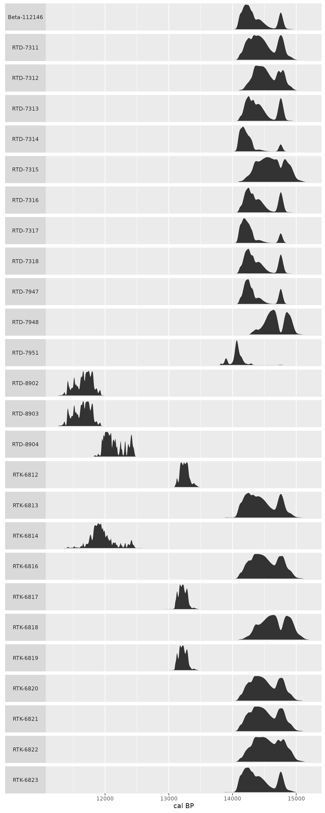

stratigraphr includes a framework for working with radiocarbon dates in a tidy data analysis.
There are many existing packages that deal with radiocarbon data in R:
The idea is not to duplicate these packages, but to provide tools that make it easier to use them together and with other packages in the extended tidyverse.
This vignette introduces some general principles for keeping radiocarbon data and models tidy, and describes how to carry out some common analysis tasks in that framework.
tibble or data.frame) together with contextual
data associated with the sample.cal objects are a generic representation of calibrated
probability distributions that can be nested within tables to maintain
their association with contextual data. Functions are provided to
convert objects from a variety of other packages to and from the
cal format.c14_* functions provide a consistent set of verbs for
transforming radiocarbon data that work well with
dplyr-style data manipulation and within functional
analysis pipelines.“Tidy data” (Wickham 2014) is a set of principles for organising datasets in a way that makes it easy to perform data analysis without tedious “data munging” between each step. In brief, tidy datasets are “rectangular” tables where:
Conventionally-reported uncalibrated radiocarbon dates (Millard 2014) are readily adapted into this
format. Each row should represent a single sample, with the most
important variables being the laboratory code, conventional radiocarbon
age (CRA), and standard error. Further information about each sample,
from the laboratory or about its context, should be stored in additional
commons. The shub1-radiocarbon dataset (Richter et al. 2017), including with this
package, is an example of tidy radiocarbon data in a
tibble:
data("shub1_radiocarbon")
head(shub1_radiocarbon)
#> lab_id context phase sample
#> 1 RTD-7951 23 Phase 7 Context 126, Sample #465
#> 2 Beta-112146 24 Phase 7 SHUB1/105
#> 3 RTD-7317 26 Phase 7 Context 83, Sample #392
#> 4 RTD-7318 27 Phase 7 Context 86, Sample #399
#> 5 RTD-7948 24 Phase 7 Context 120, Sample #455
#> 6 RTD-7947 22 Phase 6 Context 166, K25.14, Sample #430
#> material cra error outlier
#> 1 Bolboschoenus sp. (tuber) 12166 55 FALSE
#> 2 gazelle dung (?) 12310 60 FALSE
#> 3 Bolboschoenus sp. (tuber) 12289 46 FALSE
#> 4 Zilla sp. (wood charcoal) 12332 46 FALSE
#> 5 Bolboschoenus sp. (tuber) 12478 38 FALSE
#> 6 Bolboschoenus sp. (tuber) 12322 38 FALSERadiocarbon data from other sources might require some cleaning to get it into this format. tidyr is a useful package for this (see shub1_radiocarbon.R for an example of how tidyr was used to clean the Shubayqa 1 dataset). Or if you are working with dates aggregated from multiple sources, c14bazAAR package provides many useful tools for automatically querying published databases and cleaning the results.
For this vignette, we will stick with the shub1 dataset.
The first step in any analysis of radiocarbon data is likely to be
calibration. In dplyr’s grammar, calibration is a
mutation of the original (uncalibrated) data; it creates a new
variable (the calibrated probability distribution) for each observation
based on a transformation based on some of the original variables
(cra, error) and a number of other, fixed
parameters (e.g. the calibration curve). Performing calibration with
dplyr::mutate() is useful because it allows us to keep the
result of this transformation together with the input data and
associated contextual information.
c14_calibrate() is a wrapper for
rcarbon::calibrate() that can be used within
dplyr statements:
library("dplyr")
shub1_radiocarbon %>%
mutate(cal = c14_calibrate(cra, error, lab_id, verbose = FALSE)) ->
shub1_radiocarbon
#> Warning: There were 2 warnings in `mutate()`.
#> The first warning was:
#> ℹ In argument: `cal = c14_calibrate(cra, error, lab_id, verbose = FALSE)`.
#> Caused by warning:
#> ! stratigraphr::c14_calibrate() is deprecated. Please use c14::c14_calibrate() instead.
#> ℹ Run `dplyr::last_dplyr_warnings()` to see the 1 remaining warning.
head(shub1_radiocarbon)
#> # A tibble: 6 × 9
#> lab_id context phase sample material cra error outlier cal
#> <chr> <int> <chr> <chr> <chr> <int> <int> <lgl> <lis>
#> 1 RTD-7951 23 Phase 7 Context 126, S… Bolbosc… 12166 55 FALSE <cal>
#> 2 Beta-112146 24 Phase 7 SHUB1/105 gazelle… 12310 60 FALSE <cal>
#> 3 RTD-7317 26 Phase 7 Context 83, Sa… Bolbosc… 12289 46 FALSE <cal>
#> 4 RTD-7318 27 Phase 7 Context 86, Sa… Zilla s… 12332 46 FALSE <cal>
#> 5 RTD-7948 24 Phase 7 Context 120, S… Bolbosc… 12478 38 FALSE <cal>
#> 6 RTD-7947 22 Phase 6 Context 166, K… Bolbosc… 12322 38 FALSE <cal>The calibrated dates are stored as a nested column
of cal objects (see below). To work with the probability
distributions directly (e.g. to plot them with ggplot2) we
will eventually need to expand this column into a “long” format, where
each year from each sample is its own row, using
[tidyr::unnest()]. But for now the nested table is helpful
for keeping our master dataset readable.
cal class
stratigraphr uses the cal S3 class as a generic
representation of calibrated radiocarbon dates. This is a data.frame
with two columns containing the range of calendar years
(year) and associated probability densities
(p). Metadata associated with the calibration, such as the
era system and atmospheric curve used, are stored as attributes that can
be accessed with cal_metadata().
Most other radiocarbon packages have similar structures for storing
calibrated dates, differing primarily in how metadata is handled. The
c14_* functions described here are designed to seamlessly
convert between these object types when functions from other packages
are invoked. However, if you need to, you can directly construct a
cal object from a vector of probabilities with
cal(), or from various other types of object with
as_cal().
The cal class also has methods for pretty-printing
calibrated dates:
shub1_radiocarbon$cal[[1]]
#> Warning: stratigraphr::cal_metadata() is deprecated. Please use
#> c14::cal_metadata() instead.
#> # Calibrated probability distribution from 14805 to 13796 cal BP
#>
#> ##
#> ###
#> #####
#> #######
#> # ###########
#> ##### ################
#> |----------|----------------|-----------------------|------------------------|
#> 13800 1400014200 14400 14600 1480015000
#> Lab ID: RTD-7951
#> Uncalibrated: 12166±55 uncal BP
#> era: cal BP
#> curve: intcal20
#> reservoir_offset: 0
#> reservoir_offset_error: 0
#> calibration_range: 55000–0 BP
#> normalised: TRUE
#> F14C: FALSE
#> p_cutoff: 1e-05And calculating meaningful summary statistics, such as the minimum and maximum of the calibrated range:
# See https://github.com/joeroe/stratigraphr/issues/7
# min(shub1_radiocarbon$cal)
# max(shub1_radiocarbon$cal)ggplot2
library("ggplot2")
library("tidyr")
shub1_radiocarbon %>%
filter(!outlier) %>%
unnest(c(cal)) %>%
ggplot(aes(x = year, y = p)) +
facet_wrap(vars(lab_id), ncol = 1, scales = "free_y", strip.position = "left") +
geom_area() +
labs(x = "cal BP", y = NULL) +
theme(axis.text.y = element_blank(),
axis.ticks.y = element_blank(),
panel.grid.major.y = element_blank(),
panel.grid.minor.y = element_blank(),
strip.text.y.left = element_text(angle = 0))
In dplyr’s grammar, summing radiocarbon dates is a
summary of the original data, because it reduces the number of
observations. c14_sum is a wrapper for
rcarbon::spd() that can be used in a dplyr
statement.
shub1_radiocarbon %>%
group_by(phase) %>%
summarise(spd = c14_sum(cal, verbose = FALSE), .groups = "drop_last") ->
shub1_spd
#> Warning: There were 34 warnings in `summarise()`.
#> The first warning was:
#> ℹ In argument: `spd = c14_sum(cal, verbose = FALSE)`.
#> ℹ In group 1: `phase = "Phase 1"`.
#> Caused by warning:
#> ! stratigraphr::c14_sum() is deprecated. Please use c14::c14_sum() instead.
#> ℹ Run `dplyr::last_dplyr_warnings()` to see the 33 remaining warnings.
head(shub1_spd)
#> # A tibble: 6 × 2
#> phase spd
#> <chr> <list>
#> 1 Phase 1 <CalGrid [11,652 × 2]>
#> 2 Phase 2 <CalGrid [560 × 2]>
#> 3 Phase 3 <CalGrid [473 × 2]>
#> 4 Phase 4 <CalGrid [1,230 × 2]>
#> 5 Phase 5 <CalGrid [1,324 × 2]>
#> 6 Phase 6 <CalGrid [1,123 × 2]>See vignette("cql").